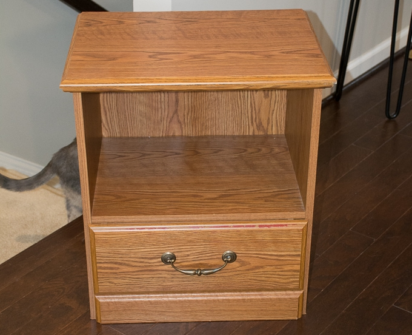
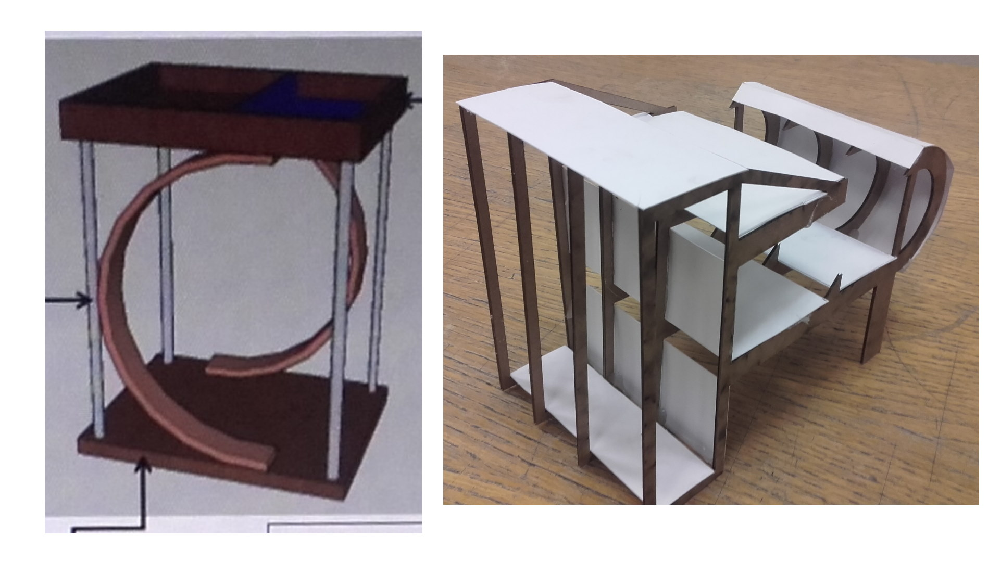
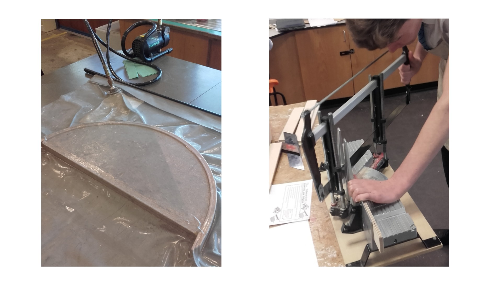
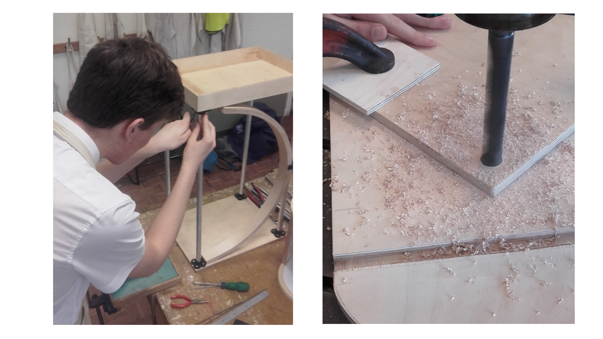
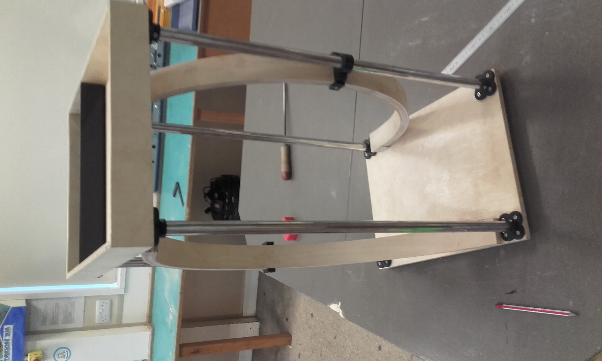

GCSE Design Project
My first taste for design came during my GCSE Resistant Materials course where we were tasked with finding a problem in a home and solving it by creating a functional product. The problem that I chose to solve was the issue of a crowded bedside table. Often bedside tables didn’t have enough storage spaces, or if they did, looked very ugly and boxy. Unfortunately there isn't as much material to show for this project as files have been lost.
The first step in the design process was to identify a problem and define a problem statement. The problem statement I came up with was:
"To create a product that makes storage around the bedside more streamlined"
Then I spent a long time investigating existing solutions and doing user research as well as my own to confirm requirements that the product should meet. A specification was formed from this.
Multiple ideas were then generated using the list of requirements with some being modelled physically using card and paper and others being done using CAD software. Examples of early prototypes are shown below.
After creating these prototypes I learnt a lot about design iteration as there were elements from all concepts that my primary user liked so I had to experiment with iteration of ideas and concepts. Unfortunately the images of these iterations have been lost in the passing of time.
Once a final design was decided upon a long process of creating the physical product. Below are images depicting the process which consisted of: vacuum forming, 3D printing, facing off on a lathe, line bending and creation of mitre joints.
 The final product:
